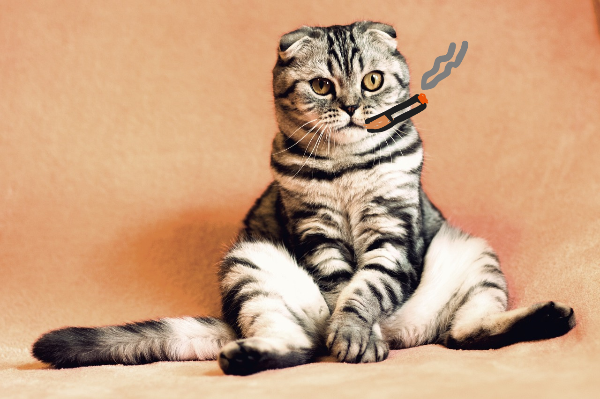

Pall Mall Reds
March 11, 2025
So to set the scene a little bit for you guys, I chose to take a crack at these guys on my stoop in Hyde Park instead of at work just to spice things up a little. Riveting, I know. It’s supposed to be getting warmer here but as usual there are about three fake Springs before we get to the real thing, so we’ve still got the punishing breeze going. Smoking in public is just awkward in this day and age, as I’m sure many of you know. Makes you feel weirdly like a public health pervert or something. Oh well, I have at least one follower now (thanks for the comment, FragManYeti!), so I have to keep this up for the fans.
I rip these bad boys open and pack them and the first thing I notice is that they’re definitely way stale. You can just sort of see the tobacco leaves trying to work their way out of the paper like little dry worms. That had me a little worried, but honestly the draw on these was pretty smooth. They’re definitely not as strong as other Reds I’ve had, but pretty flavorful and pleasant. It was a nice little stoop break between mathathon sessions of Stray, which is a sick game if you like open-world stuff where you play as an animal. Obviously you’re a cat in this one (hey, I don’t judge what you do on your day off).
OK, tell me that cat isn't a natural-born smoker.
I guess the only criticism I have is that these burn a little quickly and unevenly, but that could just have been because of the wind, the staleness, or maybe I just lit it wrong somehow. They’re really not bad, and they don’t break your bank. Miles and miles above Mavericks, that’s for sure. I’d give it a solid 7.5/10 and would definitely recommend them to anyone on a budget. And if you’re not on a budget, my paypal is @zachary260 ;-)
By the end I was honestly feeling a little nauseous but also I didn’t hate it? It’s definitely a way different experience than I’m used to, kind of like sucking on McFlurry smog. I definitely tasted something minty, maybe a little sweetness in there too like cinnamon gum. My tastebuds are probably fucked in general just from smoking cigarettes, haha which come to think of it probably disqualifies me from even being able to do this blog? Oh well, you have to waste your life somehow. Or I do, at least.
Leave me a comment if these are your smokes of choice! Or if you have game recs! Anyway, until next time I remain your faithful cancer stick sommelier.